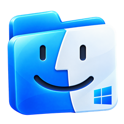

Big, honest thumbnails.
Photos and documents show what's inside. Arrange icons freely or snap them to the grid.
- Icon size and spacing per folder
- Drag a selection rectangle, type a name to jump to it

Column view, Quick Look, tabs and tags in a calm, fast file manager that runs on your real Windows files. Native, written in Rust, free forever.
This is the app's real layout, rebuilt in your browser. Open folders, press Space to preview, right-click for more. Nothing here touches your files.
You just used Windows Finder. The real one is faster.
Download for Windows01Views
Switch with one key. Each folder remembers its own view, icon size and sort order.
Photos and documents show what's inside. Arrange icons freely or snap them to the grid.
Name, date, size and kind in columns you can sort. Folders unfold in place, so you never lose your spot.
Walk deep folder trees from left to right and always see where you are. The last column previews the selected file.
A large preview, a filmstrip below and the file's details on the side. Arrow keys flip through the folder.
02Quick Look
Preview photos, video, PDF, spreadsheets and text without opening another app. And yes, you can fix that typo right in the preview.
03Features
Designed from a close study of the macOS Finder, then checked against File Explorer and Files so nothing useful is missing. Every card below works.
Press Ctrl ⇧ P and type. Every command, with its shortcut. Try it: type “col” or “dark”, then Enter.
Some commands change this page.
Light and dark follow Windows and switch live. Pick one of eight accent colours. Go ahead, this page follows along.
Tag anything, then find it all from the sidebar. Click a colour.
Names or contents, filtered by kind. Save a search to the sidebar like a smart folder.
A progress sheet, clear conflict choices and Undo for everything. Put Back from the Recycle Bin. Extract ZIP, 7z, RAR and TAR in place.
Ctrl T opens a tab, Ctrl ⇧ T brings back the one you closed. Try the bar below.
Ctrl I shows sizes, dates, kind, permissions, the app it opens with, and a preview.
04Made for Windows
Not a skin, not a web app. A native file manager that knows your drives, your shell extensions and your shortcuts.
05Keyboard first
The Finder's shortcuts, mapped to Ctrl. Forgot one? The command palette lists them all.
Press one of these keys while this section is on screen.
06Honest comparison
Explorer and Files are good apps. Windows Finder is for people who want the Finder's design and workflow on Windows.
| Feature | Windows Finder | File Explorer | Files |
|---|---|---|---|
| macOS Finder design | ✓ | – | – |
| Column view (Miller columns) | ✓ | – | ✓ |
| Gallery view with filmstrip | ✓ | partial | partial |
| Quick Look with the Space bar | ✓ | preview pane | ✓ |
| Colour tags | ✓ | – | ✓ |
| Command palette | ✓ | – | ✓ |
| Tabs | ✓ | ✓ | ✓ |
| Native shell-extension menu | ✓ | ✓ | ✓ |
| Open source | MIT | – | MIT |
Based on our own testing of File Explorer (Windows 11) and Files. Something wrong? Open an issue.
07Under the hood
The interface is drawn on the GPU with GPUI, the framework behind the Zed editor. Disk access, search and previews run off the UI thread, so scrolling stays smooth in huge folders. Layout, colours and behaviour were measured on the real Finder; the research notes are in the repository.
Free, for Windows 10 and 11, 64-bit. Installs for your user only, without administrator rights, and comes with an uninstaller.
# Or build it yourself (Rust + Visual Studio C++ build tools)
git clone https://github.com/EvanPluchart/windows-finder.git
cd windows-finder
cargo build --release
.\target\release\WindowsFinder.exe08FAQ
Yes, this is it. Windows Finder is a free, open source file manager for Windows 10 and 11 that recreates the macOS Finder: the same window layout, icon, list, column and gallery views, tabs, Quick Look previews, tags and Get Info.
macOS itself does not run on Windows, but Windows Finder gives you a Finder-style file manager that works on your real Windows files, drives, OneDrive, WSL distributions and Recycle Bin.
File Explorer has no column (Miller columns) view. Install Windows Finder and press Ctrl 3 in any folder to browse it in columns, with a preview of the selected file in the last column.
Yes. In Windows Finder, select a file and press Space to preview images, text, CSV, PDF and video, without opening another app. Text and CSV files can be edited right in the preview.
Yes. It is free and released under the MIT license. No ads, no account, no telemetry.
Only if you want it to. An optional per-user setting makes it the default folder handler and can be undone in one click. File Explorer stays on your PC and Win+E keeps working.
The installer is not code-signed yet, so SmartScreen does not recognise it. Click More info, then Run anyway. The source code and the release builds are public on GitHub.
Deleting sends files to the Recycle Bin, irreversible actions ask for confirmation, and nothing is sent over the network. Registry changes (only when you ask) stay under your user profile.
No. It is an independent open source project inspired by the macOS Finder. Finder and macOS are trademarks of Apple Inc.
Install it, try column view and Quick Look for a day, and see if you go back.